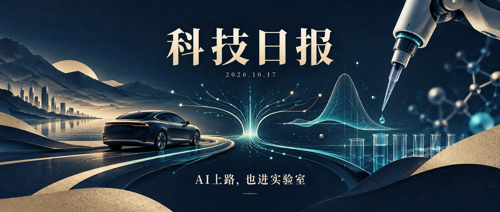

科技日报 002｜特斯拉FSD再进一国，AI走进实验室
第 002 期 · 2026-10-17 · Python斗罗

本期范围：北京时间10月16日00:00—10月17日12:00。具体时刻已换算为北京时间；外站只标日期的，保留“官网日期”说明。
昨天看完Roadster的演示，今天继续追马斯克公司的实际进展：特斯拉FSD又获得一个国家的许可。
AI这边也有几条值得停下来看的消息：写代码时能中途纠偏，追查多年的密码学问题有了新线索。
实验室里的机器人，也开始接收Agent的任务。
今天看六条：上路、干活、做研究，各自往前走了一步。
马斯克公司动态
01｜特斯拉FSD在斯洛伐克获准使用
10月16日22:18快讯 · 当地主管部门已确认
斯洛伐克交通部宣布，认可特斯拉FSD系统的临时型式批准，允许这套驾驶辅助系统在当地使用。
当地交通部说明，这项决定承接荷兰RDW此前给出的批准。
驾驶员仍要全程监督，并对驾驶负责。
所以，这次新增的是一个获准使用的市场。它与无人驾驶出租车的落地，仍是不同的事。
我关注这条，是因为一套技术要从演示走到日常使用，除了能力，还需要逐个市场推进准入。
来源：斯洛伐克交通部公告；消息时点：金十。
AI工具与研究
02｜Codex CLI更新：任务跑偏时，可以中途纠正
10月16日05:30发布 · CLI 0.163.0
Codex CLI 0.163.0发布了。对日常写代码来说，我更关注两个实用变化。
一个是响应过程中发送补充要求，立即调整任务方向。
另一个是打开/config，搜索设置并直接修改支持即时生效的选项。
官方也说明，中断一轮任务时，会停止仍在运行的Code Mode单元及其中的工具调用。
“发现方向不对，赶紧把它叫回来”，这比等它写完一大堆再推翻，更贴近真实开发。
这条更新针对命令行版本，桌面端的功能和版本另看对应更新记录。
来源：OpenAI官方更新记录、官方版本发布页。
03｜Claude追溯出密码学参数的来源
10月17日01:02发布 · Anthropic研究报告
Anthropic公布，内部研究模型Claude找到了多条NIST椭圆曲线参数种子的生成方式。
这些种子多年来来源不明。按照团队给出的结果，它们来自一个老式C语言伪随机数生成器，初始化值是Unix时间戳。
这里解决的是“参数当年怎么来的”。
官方明确表示，这不构成对ECDSA的破解，也不是发现了新的攻击方法。
研究仍有未解问题，例如部分候选曲线当年为何被跳过。完整参数生成过程还没有全部还原。
我觉得有意思的是它的工作方式：换个猜想，写程序验证，再检查结果能不能复现。AI正在参与这样的研究过程。
来源：Anthropic研究原文。
04｜谷歌把Agent接到了真实实验台上
官网日期10月16日 · 实验室研究原型
Google Research公布了几项让AI参与湿实验的研究。所谓湿实验，就是要真正动用试剂、样本和实验设备。
其中的VERID系统，会跟踪机械臂、试剂量和移液枪头等状态，让Agent在动手前先做模拟检查。
为什么要多这一步？因为代码能运行，实验动作也可能做不了：容器放不下移液器，或者试剂已经用完。
真实反馈，开始成为Agent下一轮决策的依据。
在另一项分子设计研究里，团队让Agent根据实验结果修改候选方案。它也会走弯路，需要从失败结果中调整。
这些仍是研究原型。研究人员保留方案审批、实验流程审核和现场监督。
对我来说，最值得看的就是这一点：AI开始把“提出想法”和“用真实结果修正想法”接起来了。
来源：Google Research官方文章。
自动驾驶的新进度
05｜Waymo进军多伦多，首批载客目标是2028年
官网日期10月16日 · 先做准备和测试
Waymo宣布进入加拿大，在多伦多筹备自动驾驶出行服务，目标是2028年迎来首批乘客。
近期首先开展的，是由人员驾驶车辆进行道路测绘，再由受训人员坐在驾驶位上参与测试。
公司还将与当地的Element Fleet Management合作，建设车队维护和运营能力。
这条让我想到，自动驾驶扩城需要适应具体街道，也需要有人处理车辆维护和乘客服务。
运营准备同样是技术落地的一部分。
来源：Waymo官方公告；10月16日已见金十报道。
06｜奔驰与英伟达扩大合作，推进下一代驾驶系统
10月16日16:04起快讯 · 合作开发阶段
奔驰与英伟达宣布扩大合作，把奔驰MB.OS与英伟达的车载计算、传感器架构、驾驶软件和安全系统结合起来。
合作覆盖城市点到点辅助驾驶、主动安全、自动泊车，以及未来的L4应用开发。
这是一份开发合作公告，尚未给出新系统的具体上市时间。
对汽车行业来说，变化越来越依赖软硬件共同推进。
后面更值得追的，是哪些车型先用上，以及用户实际能开启哪些能力。
来源：英伟达官方公告；消息时点：金十。
我接下来更想看什么
特斯拉这边，继续看FSD进入更多市场后，实际开放范围和用户体验如何。
AI这边，我更想追两件事：写代码时能不能少返工，做研究时能不能交出经得起复查的结果。
今天这些进展，各有各的阶段。放在一起看，AI能参与的具体工作正在变多。
接下来，就看这些能力能把事情做得多稳。
来源索引